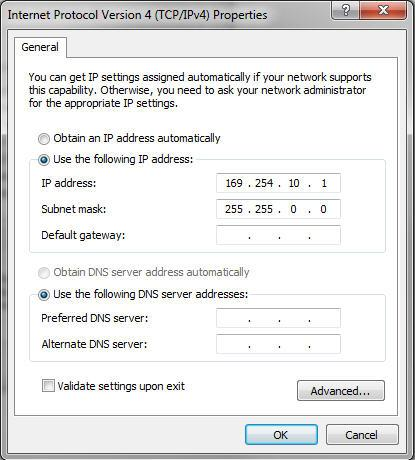

To connect a Sourcery Probe Personal to your Windows 7 computer and configure it, perform the following steps.
Procedure
The first time you connect the USB cable to your host computer, you might get a New Hardware Detected dialog box. If you have already installed the debugger software, then Windows should be able to automatically install the right USB driver. This will happen again the first time you connect a Sourcery Probe Personal to each different USB port on your computer.
It is important to note the warning in this dialog box stating that the process of installing the device drivers can require some time to complete.
| Note | |
|
New probes are configured for Local Link mode, which means the probe will assign itself an address in the range 169.254.xxx.yyy. You may want to check what value the probe picked using the Sourcery Probe Console, so you can ping it, but it is not usually necessary because CodeBench can automatically detect the presence of Sourcery Probes. |
|
To configure the PC network adapter to use an unique static IP address, perform the following steps. Note that this is not normally necessary as the default configuration has the probe and PC assigning compatible addresses on their own. However, there are times when a static IP solution is desirable.
Procedure
The Subnet mask should always be 255.255.0.0 when using IP addresses in the local link range. If you set the probe and PC to IP addresses in a different range, then the subnet mask would typically be 255.255.255.0 (on both probe and PC) and the Gateway field should remain blank.
Figure 2‑1. IP Properties Dialog
Windows 7 auto-configures after the drivers are installed and the connection is made.
Related Topics